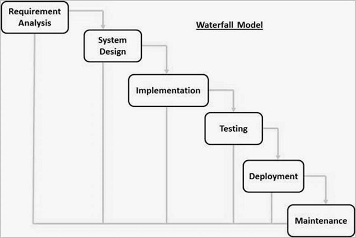
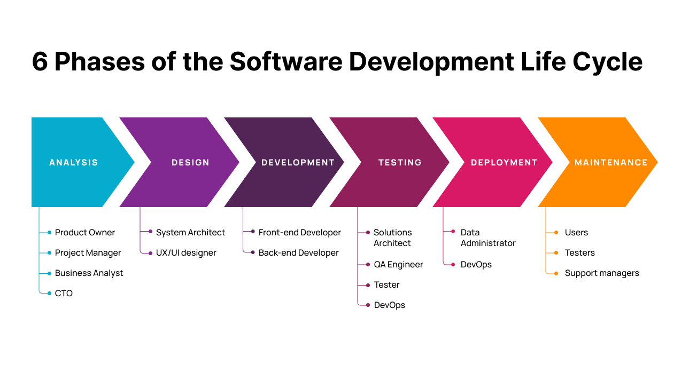
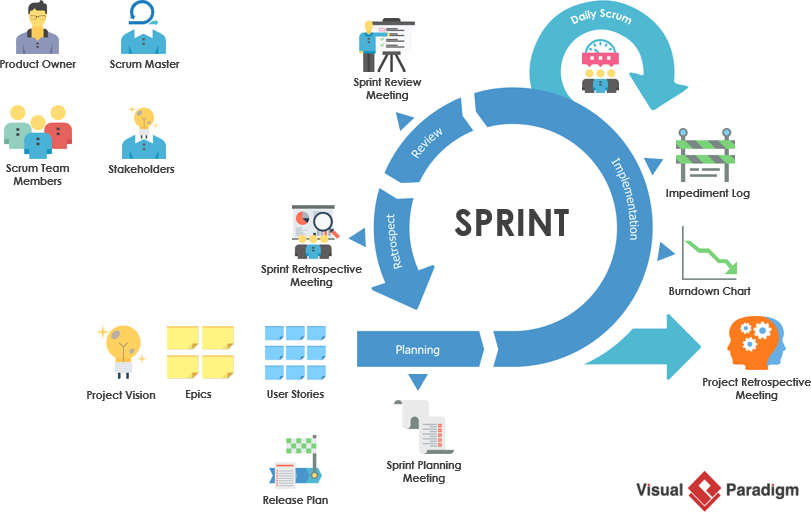
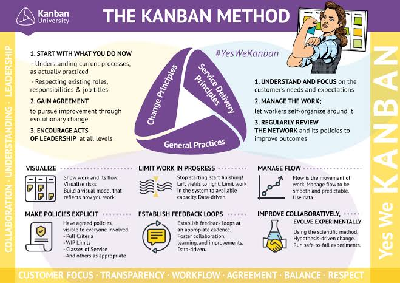

Theories of Software Development
Different Approaches:
- Waterfall Model: A linear sequential approach where each phase must be completed before the next begins.

- Agile Model: An iterative and incremental approach that emphasizes flexibility, collaboration, and customer feedback.

- Scrum: A framework within the Agile methodology that focuses on delivering value in short iterations called sprints.

- Kanban: A visual management method that helps teams visualize their work, limit work in progress, and maximize efficiency.

- DevOps: A set of practices that combines software development (Dev) and IT operations (Ops) to shorten the development cycle and deliver software faster.